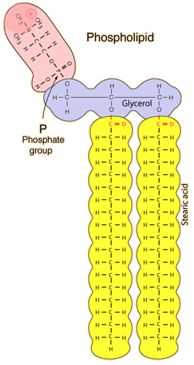
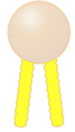
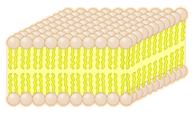

Phospholipids
Phospholipids make up an important class of lipids for the construction of cell membranes. The phospholipids are not "true fats" because they have one of the fatty acids replaced by a phosphate group.
|

| This sketch of a phospholipid molecule shows two fatty acids and a phosphate group attached to a glycerol backbone. Stearic acid is shown as the fatty acid, but there are many variations in the fatty acids.

In sketching cell membrane structures, a phospholipid molecule is often represented by an icon like the above with the top part representing the polar phosphorous-containing part and the two extensions representing the fatty acids.
|
Phospholipids tend to arrange themselves into double-layered membranes with the water-soluble phosphate ends on the outside and the fatty acide extensions on the inside. |  |
"If phospholipid molecules are shaken in a glass of water, the molecules will automatically form double-layered membranes. It is important to understand that the membrane formed is not rigid or stiff but resembles a heavy olive oil in consistency. The component phospholipids are in constant motion as they move with the surrounding water molecules and slide past one another." (Enger & Ross, Ch 4)
|
Index
Biochemical concepts
Chemistry concepts
Reference
Enger & Ross
Ch 3,4 |